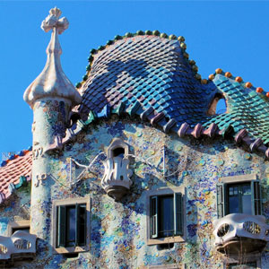

Home History Buildings Restaurants The Beach
| La Sagrada Familia |
| Park Guell |
| Casa Mila |
| Torre Agbar |
| Casa Estape |
| Casa Batllo |
| Camp Nou Stadium of F.C Barcelona |
| Palau de la Musica |
La Casa Batllo

Casa Batlló is a renowned building located in the heart of Barcelona and is one of Antoni Gaudí’s masterpieces. Casa Batlló is a remodel of a previously built house. It was redesigned in 1904 by Gaudí and has been refurbished several times after that. Casa Batlló evokes the creativity and playfulness of Gaudí’s work through the incrassate facades and creative floors. Gaudí's assistants Domènec Sugrañes i Gras, Josep Canaleta and Joan Rubió also contributed to the renovation project.
The local name for the building is Casa dels ossos (House of Bones), as it has a visceral, skeletal organic quality. It was originally designed for a middle-class family and situated in a prosperous district of Barcelona.
The building looks very remarkable — like everything Gaudí designed, only identifiable as Modernisme or Art Nouveau in the broadest sense. The ground floor, in particular, is rather astonishing with tracery, irregular oval windows and flowing sculpted stone work.
It seems that the goal of the designer was to avoid straight lines completely. Much of the façade is decorated with a mosaic made of broken ceramic tiles (trencadís) that starts in shades of golden orange moving into greenish blues. The roof is arched and was likened to the back of a dragon or dinosaur. A common theory about the building is that the rounded feature to the left of centre, terminating at the top in a turret and cross, represents the lance of Saint George (patron saint of Catalonia, Gaudí's home), which has been plunged into the back of the dragon.